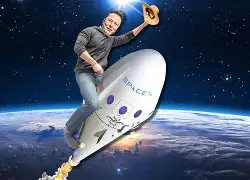

Google AdSense Ad Here (Header)
Will Elon Musk Ever Become Poor?
An in-depth look into Elon Musk’s wealth, income sources, and the financial risks that could impact his fortune in the future.
Elon Musk Wealth Overview
A detailed breakdown of Musk’s assets, investments, and how his companies contribute to his net worth.

Tesla & SpaceX Income Sources
Exploring how Tesla, SpaceX, and other ventures generate revenue and sustain Musk’s financial empire.
Business Risks & Failures
An analysis of the potential risks, market volatility, and challenges that could affect Musk’s wealth trajectory.
Google AdSense Ad Here (Middle)
Future Predictions
Experts weigh in on the sustainability of Musk’s fortune and how emerging technologies may influence his financial future.